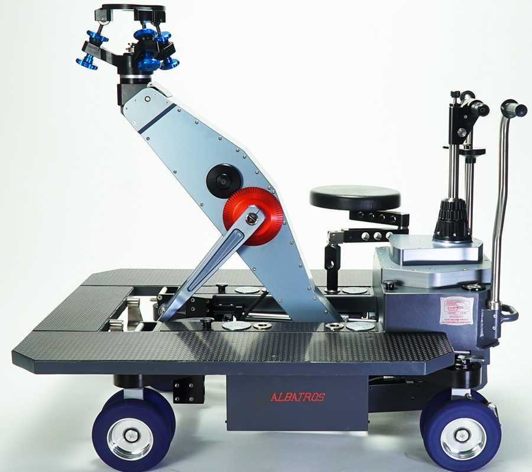

No todos los travellings necesitan vías y un dolly. Muchos de los planos de producto, detalle o recurso que vemos en publicidad se ruedan con un slider: un carril corto sobre el que la cámara se desliza con suavidad. Es una de las herramientas de grip más rentables por lo que aporta en relación a lo que cuesta montarla.
Qué es un slider de cámara
Un slider es un raíl sobre el que se desplaza un carro con la cámara. Puede apoyarse en trípodes, en el suelo, sobre un dolly o en soportes especiales. Su recorrido suele ser corto, de unos pocos decímetros a algo más de un metro, y se opera a mano, empujando el carro, o con motor.
En K Grip trabajamos con el Panther Vario Slider, de 2 ft (60 cm), de la casa alemana Panther, fabricante también del dolly Panther Classic PLUS.
Qué planos resuelve un slider
1. Producto y bodegón
Un desplazamiento lento junto a un perfume, un plato o un detalle de coche da vida a un plano estático. Es el uso más habitual en publicidad.
2. Revelaciones
La cámara se desliza tras un primer término (una columna, una planta, una persona) y descubre el sujeto.
3. Paralaje
Un movimiento lateral corto separa visualmente los términos de la imagen y da profundidad incluso a un plano general.
4. Pequeños acercamientos
Un empuje suave hacia un rostro en entrevista, documental o videoclip.
Slider manual o motorizado
El slider manual lo empuja el operador o un maquinista: es rápido, silencioso y permite adaptar la velocidad a la acción. El motorizado repite el mismo movimiento con exactitud y es útil en time-lapse, en planos muy lentos o cuando hay que sincronizar varias tomas para postproducción. En la mayoría de rodajes de publicidad, un slider manual bien operado es suficiente.
Slider o dolly: cuándo usar cada uno
| Slider | Dolly sobre vías | |
|---|---|---|
| Recorrido | Corto | Tan largo como las vías |
| Montaje | Minutos | Más tiempo y espacio |
| Carga | Cámaras ligeras o medias | Hasta 250 kg (Panther Classic PLUS) |
| Movimiento vertical | No | Sí, con columna |
| Ideal para | Producto, detalle, recurso | Travellings largos y con operador |
Una combinación muy útil: el slider montado sobre el dolly, para sumar un desplazamiento corto y preciso a un movimiento mayor. Repasamos los modelos de dolly en tipos de dolly para cine.

Cómo montar un slider para que no se note
- Nivelado perfecto: cualquier inclinación se ve en el horizonte. Se nivela con cabezas o calzos.
- Apoyos firmes: sobre dos trípodes o patas sólidas para evitar flexión en el centro.
- Peso dentro de su rango: cámara, óptica y accesorios pesados hacen que el carro frene o vibre.
- Arranque y frenada suaves: son lo que distingue un plano profesional; se ensayan como en un dolly.
- Óptica adecuada: con angulares el movimiento se nota menos; con focales largas, cualquier vibración se multiplica.
Cuándo no es suficiente un slider
Si el plano necesita recorrer varios metros, llevar operador sobre la plataforma, subir y bajar la cámara o soportar un paquete de cine pesado, el slider se queda corto y lo correcto es un dolly sobre vías. Y si la cámara tiene que acompañar a un personaje por un espacio irregular, la solución es un gimbal.
Preguntas frecuentes
¿Qué es un slider de cámara?
Un raíl corto sobre el que se desliza un carro con la cámara para hacer travellings cortos y suaves sin necesidad de dolly ni vías.
¿Qué diferencia hay entre slider y dolly?
El slider hace desplazamientos cortos y se monta en minutos; el dolly recorre vías de varios metros, soporta más peso, puede llevar operador y subir o bajar la cámara.
¿Qué slider tiene K Grip?
K Grip trabaja con el Panther Vario Slider de 2 ft (60 cm).